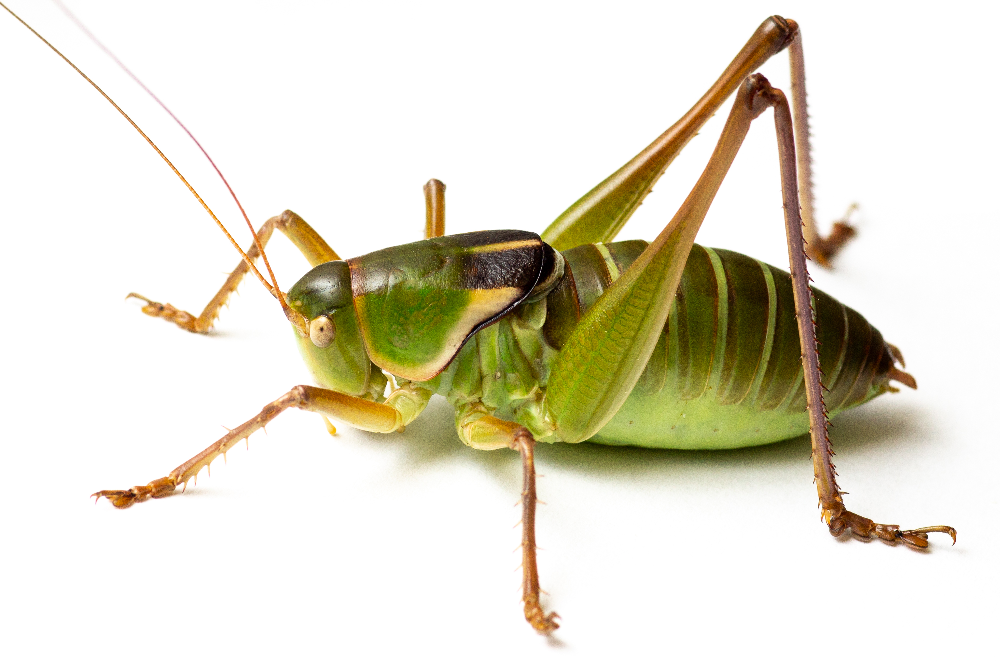
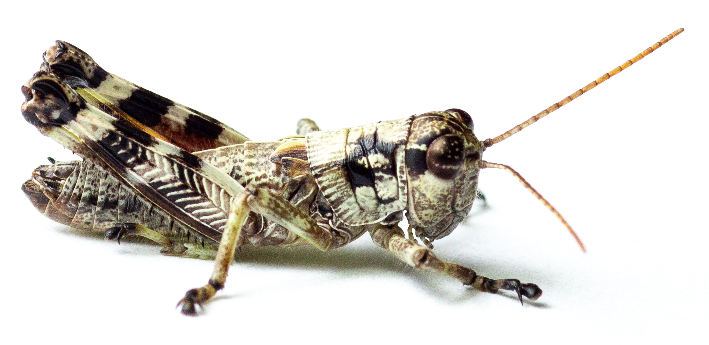

"ABF upcoming Events Above - Next Meeting Below"
Join us on Monday September 23 at Zilker Botanic Garden or on Zoom for Presentation "Title: Orthoptera Diversity and Biogeography in Texas."

Prsented by Bradon Woo - Entomologist.
Join us on Monday September 23 at Zilker Botanic Garden or on Zoom for Presentation "Title: Orthoptera Diversity and Biogeography in Texas."

Prsented by Bradon Woo - Entomologist
Join us on Monday September 23 at Zilker Botanic Garden or on Zoom for Presentation "Title: Orthoptera Diversity and Biogeography in Texas."
Prsented by Bradon Woo - Entomologist
Join us on Monday September 23 at Zilker Botanic Garden or on Zoom for Presentation "Title: Orthoptera Diversity and Biogeography in Texas."
Prsented by Bradon Woo - Entomologist
Join us on Monday September 23 at Zilker Botanic Garden or on Zoom for Presentation "Title: Orthoptera Diversity and Biogeography in Texas."
Prsented by Bradon Woo - Entomologist
Join us on Monday Septermber 23rd at 7:00pm at Zilker Botanic Garden or on Zoom for Presentation Orthoptera Diversity and Biogeography in Texas." Presented by Brandon Woo Engomologist
Description: The Orthoptera (grasshoppers, crickets, and katydids) are a diverse group of insects in Texas, with well over 150 species found in the state. Moreover, their distributional patterns are clear indicators of the many different habitats and ecotypes present in Texas. This talk will provide an overview of Orthoptera diversity and biogeographic patterns in the state, as well as some taxonomic and distributional mysteries that still need solving.
Bio: I received my B.S. from Cornell University in 2020 and joined the Song lab at Texas A&M University as a PhD student in 2021. I have been fascinated by insects for most of my life, but I consider myself both an entomologist and a naturalist as I am interested in any and all taxonomic groups. My Ph.D research focuses on the systematics and biogeography of pygmy mole crickets (Orthoptera: Tridactylidae), an understudied and early-branching lineage of small, burrowing grasshoppers. I am also active as an Orthoptera identifier on several citizen/community science platforms such as BugGuide and iNaturalist, which I consider extremely important for both my own learning and in engaging the public about nature.
facebook group
join our large group discussion on facebook

Monarch Emergence Video by Linda Avitt